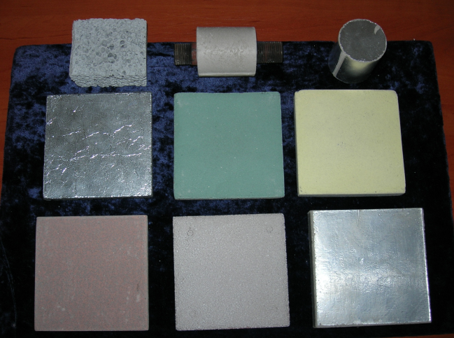

Подробнее
ГИДРОФОБНЫЕ ТЕРМОСТОЙКИЕ ЗОЛЬ-ГЕЛЬ ПОКРЫТИЯ ДЛЯ ЗАЩИТЫ ПОВЕРХНОСТИ ИЗДЕЛИЙ ИЗ МРАМОРА И КЕРАМИКИ

Полученные образцы представляют собой силикатные наноструктурные композиционные материалы на основе диоксида кремния с разным содержанием углерода, оксида железа и связанной воды, формируемые на различных типах подложек (пластике, металле, ДСП и др.). Использование в качестве наполнителя таких материалов диоксида кремния в виде отходов химических и ферритных производств повышает физико-химические свойства материалов, а содержащиеся в них наноразмерные частицы оксидов и металлов (железа, кобальта, цинка и других элементов), а также дополнительно введённого углерода, позволяют формировать наноструктурные материалы с радиопоглощающими и радиоэкранирующими свойствами.
Основные преимущества
Силикатные радиозащитные и радиопоглощающие материалы могут быть использованы в качестве первого слоя радиопоглотителей электромагнитного излучения, согласующего волновое сопротивление свободного пространства с параметрами экранирующей конструкции и снижающего уровень отражаемой энергии, а также для облицовки внутренних поверхностей камер, применяемых в радиобиологических исследованиях.
Технические характеристики
Плотность в зависимости от состава – 100-200 кг/м3;
Прочность – 3-12 кН;
Влажность материала – 30-40 %;
Удельная поверхность – 40-60 м2/г;
Коэффициент ослабления на частоте 8-12 ГГц – 12-15 дБ.
Конкурентные преимущества
Обеспечение достаточной эффективности экранирования электромагнитного излучения, негорючесть, экологическая чистота, морозоустойчивость, низкий объёмный вес, достаточная механическая прочность, удешевление материала за счет того, что при его изготовлении находят применение отходы химических и ферритных производств.